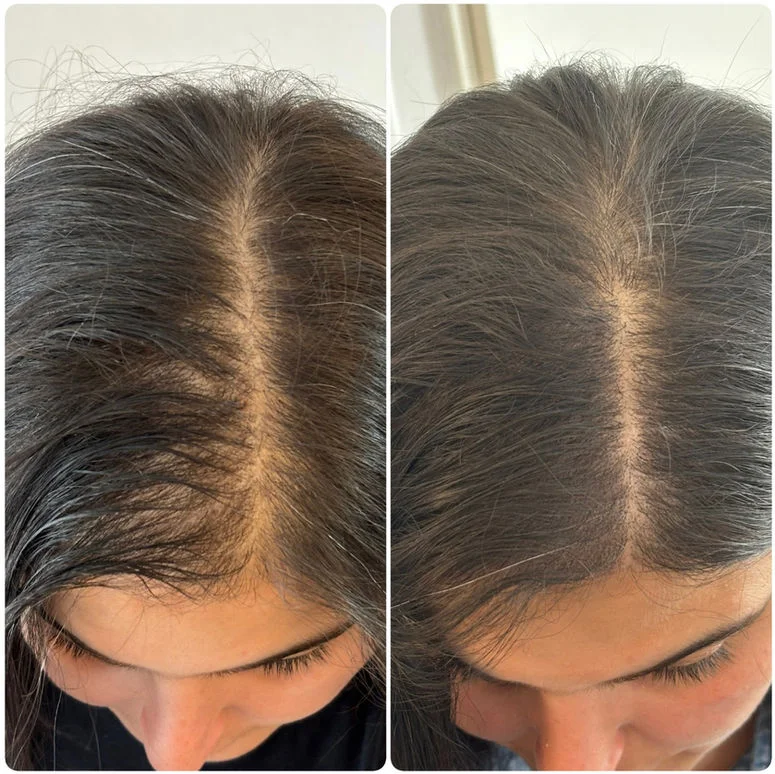

La pelade, ou alopecia areata, est une maladie auto-immune qui provoque une perte de cheveux par plaques. Elle touche autant les femmes que les hommes, souvent de façon soudaine et imprévisible. Si les traitements médicaux existent, leur efficacité reste variable. La micropigmentation capillaire s'impose comme une solution esthétique immédiate et durable pour retrouver une apparence naturelle.
Qu'est-ce que la pelade ?
La pelade est une affection auto-immune dans laquelle le système immunitaire attaque les follicules pileux, entraînant une chute de cheveux en plaques rondes ou ovales. Elle peut évoluer de façon imprévisible : s'aggraver, se stabiliser ou régresser spontanément. Dans les cas sévères, elle peut évoluer vers une pelade totale (perte de tous les cheveux du cuir chevelu) ou universelle (perte de tous les poils du corps).
Pour les femmes, l'impact psychologique est souvent considérable. Les cheveux jouent un rôle central dans l'identité féminine et leur perte peut engendrer anxiété, isolement social et perte de confiance en soi.
Pourquoi la micropigmentation est-elle adaptée à la pelade ?
La micropigmentation capillaire ne fait pas repousser les cheveux, mais elle recréé visuellement l'apparence de follicules pileux dans les zones touchées. Le résultat est un camouflage naturel, discret et non chirurgical qui peut transformer radicalement l'apparence d'une personne atteinte de pelade.
- Camouflage immédiat : dès la première séance, les plaques deviennent beaucoup moins visibles.
- Adapté aux cheveux longs : en densification, le pigment est déposé à la racine pour donner un effet de volume sans que personne ne remarque la différence.
- Non invasif : aucune chirurgie, aucune anesthésie générale, aucune convalescence.
- Pigments bio-résorbables : les pigments utilisés sont certifiés et ne vireront jamais au vert ou au bleu.
Comment se déroule le traitement pour une pelade ?
Le traitement commence toujours par une consultation gratuite lors de laquelle le praticien évalue l'étendue des zones touchées, la couleur naturelle des cheveux et la carnation. Un patch test est souvent réalisé pour choisir les teintes les plus adaptées.
Le traitement se déroule ensuite en 2 à 4 séances espacées de 10 à 20 jours, permettant au pigment de se fixer progressivement et d'ajuster la densité au fur et à mesure.
La pelade peut-elle évoluer après le traitement ?
Oui. La pelade est une maladie évolutive et imprévisible. Si de nouvelles plaques apparaissent après le traitement, des retouches ciblées peuvent être réalisées. Chez MPC Clinique, si une séance supplémentaire est nécessaire pour maintenir le résultat, elle n'est pas facturée en plus.
Pelade vs alopécie androgénétique : quelle différence pour le traitement ?
La pelade crée des plaques localisées, tandis que l'alopécie androgénétique féminine provoque un amincissement diffus sur l'ensemble du cuir chevelu. Dans les deux cas, la micropigmentation apporte une réponse efficace, mais la technique de densification sera légèrement différente. Votre praticien adapte l'approche à votre profil spécifique.
Vous souffrez de pelade et souhaitez retrouver confiance ?
Contactez-nous pour une consultation gratuite. Nos experts évaluent votre situation et vous proposent une solution personnalisée, sans engagement.
Je demande une consultation gratuite